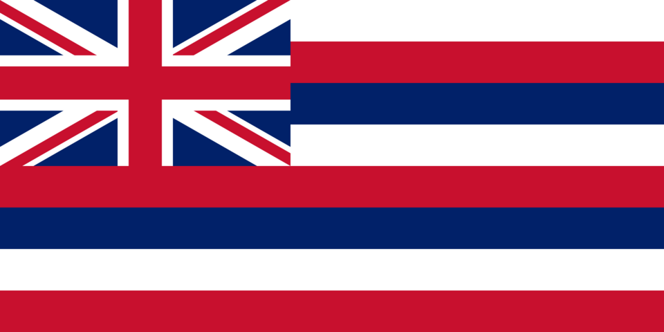

Olivia Crawford
About Me
Hello! My name is Olivia Crawford and I live in Hawaii. I'm currently taking WDD 131 to learn dynamic web development skills. I enjoy playing tennis, going swimming, family, travel, learning tech, and more. Looking forward to building more web projects!
Web Dev Resources
Hawaii – The Aloha State

Hawaii is the 50th state of the United States and the only state made entirely of islands. Its flag features eight horizontal stripes (white, red, blue) representing the eight main islands, with the Union Jack in the corner — a nod to historical British friendship with the Hawaiian Kingdom.
Due to its extreme isolation in the Pacific, Hawaii has one of the highest rates of endemic species in the world: over 90% of its native terrestrial plants and animals are found nowhere else on Earth. Iconic examples include the nēnē (Hawaiian goose, the state bird), the Hawaiian monk seal, the ‘ōpe‘ape‘a (Hawaiian hoary bat — the only native land mammal), and vibrant forest birds like the ‘i‘iwi.
Best known for its volcanoes, stunning beaches, palm trees, aloha spirit, and unique biodiversity — from active lava flows to coral reefs teeming with life.